Khi mất GNSS suốt 9 phút, IMU quay quanh trục nằm ngang (X hoặc Y) kết hợp cả từ kế lẫn baro giữ sai số ngang ở mức trung vị khoảng {{BEST}} m RMSE. Con số đó nhỏ hơn khoảng {{RATIO_FIX}} lần so với IMU cố định không hỗ trợ. Mỗi thành phần chặn một nguồn trôi riêng: phép quay triệt tiêu bias ở hai trục vuông góc với trục quay, từ kế khóa hướng, còn baro khóa kênh đứng và giúp quan sát góc nghiêng.
Thanh = trung vị RMSE sai số ngang trong lúc mất GNSS (60–600 s) qua {{NMC}} lần Monte Carlo (mỗi lần một bộ sai số IMU, baro, từ kế, GNSS mới); vạch mảnh = khoảng p10–p90. Thang log. IMU mức "industrial" (~ADIS16488), trục quay 36°/s, encoder 16 bit.
Xe xuất phát gần Hà Nội, đứng yên 10 s, rồi chạy 600 s với tốc độ 10–20 m/s, rẽ liên tục (có roll do quay vòng) và lên xuống dốc tới ±3 m/s. GNSS (1 Hz, σ = 2,5 m ngang / 5 m đứng) chỉ có trong 60 s đầu. Khoảng thời gian đó đủ để bộ lọc căn chỉnh tư thế và ước lượng sơ bộ bias. Từ giây 60 đến hết quỹ đạo, chỉ còn IMU cùng (tùy trường hợp) baro và/hoặc từ kế.
IMU đặt trên một bàn xoay có trục trùng trục X (tiến), Y (phải) hoặc Z (xuống) của xe, quay liên tục 36°/s. Encoder đo góc θ của bàn xoay, nên tư thế xe được suy ra từ tư thế IMU:
| Cảm biến | Tham số | Giá trị |
|---|---|---|
| Con quay | ARW / bias tĩnh / bất ổn định bias | 0,3 °/√h / 10 °/h / 6,25 °/h |
| Gia tốc kế | VRW / bias tĩnh / bất ổn định bias | 0,03 m/s/√h / 5 mg / 0,1 mg |
| IMU | Tần số / thời gian tương quan bias | 100 Hz / 100 s |
| Baro | Tần số / nhiễu / bias / trôi GM | 10 Hz / 0,3 m / ~4 m / 1 m, 300 s |
| Từ kế | Từ trường F / độ từ khuynh I / độ từ thiên D | 45 µT / 31° / −1,3° |
| Từ kế | Tần số / nhiễu / bias hard-iron | 10 Hz / 0,2 µT / (0,5; −0,3; 0,4) µT |
| Encoder | Độ phân giải / nhiễu | 16 bit (0,0055°) / 0,002° |
| GNSS | Tần số / σ vị trí / σ vận tốc | 1 Hz / 2,5; 2,5; 5 m / 0,1 m/s |
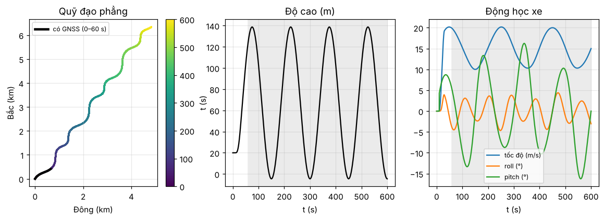
INS tích phân con quay để có tư thế, xoay lực riêng đo được sang hệ NED, cộng trọng lực rồi tích phân hai lần để có vận tốc và vị trí. Trong mã nguồn, đây là hàm ins.py: ins_step:
Bộ lọc Kalman mở rộng (EKF) không ước lượng trực tiếp tư thế, vận tốc và vị trí mà ước lượng sai số của chúng (error-state, vòng kín, giống NaveGo ins_gnss.m). Vector trạng thái gồm 19 phần tử: φ (3) tư thế, δv (3), δp (3), bias con quay δbg (3), bias gia tốc kế δba (3), bias baro δbb (1) và bias từ kế δbm (3). Các phương trình sai số chính (Groves 2013, chương 14):
Từ hai dòng đầu có thể thấy sai số ngang được nuôi bởi hai nguồn:
Với GNSS, bộ lọc quan sát δp và δv rồi ước lượng ngược φ và các bias. Khi GNSS mất, các phần chưa ước lượng được sẽ tích phân thành độ trôi. Dao động Schuler (chu kỳ 84,4 phút) dài hơn nhiều so với 9 phút, nên trong bài này độ trôi vẫn đang ở pha tăng đa thức.
Trọng lực giảm theo độ cao: g(h) ≈ g₀(1 − 2h/R). Nếu INS ước lượng độ cao cao hơn thực tế, nó dùng trọng lực nhỏ hơn thực tế, nên tính ra gia tốc hướng lên, và độ cao lại càng sai thêm. Đây là vòng hồi tiếp dương:
Vì vậy, khi chỉ có IMU, độ cao cố định trôi tới hàng trăm mét (Bảng 2). Baro đo độ cao một cách độc lập, kèm bias trôi chậm. Mô hình đo trong EKF:
Phép đo này cắt vòng hồi tiếp: σ độ cao giữ ở khoảng 1 m (Hình 10, phải). Bias baro chỉ quan sát được khi còn GNSS. Sau đó bộ lọc giữ giá trị đã học được, và sai số độ cao xấp xỉ phần bias trôi thêm (Hình 8).
Thành phần đứng của fn×φ là δv̇D = fNφE − fEφN. Mỗi khi xe tăng tốc hay rẽ (fN, fE ≠ 0), góc nghiêng sai để lại dấu vết trong vận tốc đứng. Khi baro khóa kênh đứng, dấu vết đó trở thành phép đo gián tiếp của φN và φE. Bộ lọc nhờ vậy liên tục sửa góc nghiêng ngay cả khi không có GNSS.
Hình 10 (giữa) cho thấy điều này: σ của góc nghiêng với baro dao động theo các khúc cua và ngừng tăng, còn khi chỉ có IMU thì nó tăng đều. Vì góc nghiêng là nguồn trôi ngang lớn nhất, IMU cố định + baro giảm RMSE ngang từ {{FIX_NONE}} m xuống {{FIX_BARO}} m.
Baro không giúp gì cho yaw (Bảng 2: yaw của "IMU + Baro" gần bằng "Chỉ IMU").
Từ kế gắn cùng IMU đo vector từ trường Trái Đất mn chiếu về khung cảm biến. Bộ lọc dùng cả 3 thành phần:
Ma trận [mn×] có hạng 2: phép đo một vector quan sát được mọi phép quay trừ phép quay quanh chính mn. Ở Hà Nội, độ từ khuynh I ≈ 31°, nên mn gần nằm ngang (chủ yếu hướng Bắc). Do đó yaw (quay quanh trục thẳng đứng) và roll/pitch quanh trục Đông được quan sát rất tốt, chỉ phép nghiêng quanh trục gần Bắc–Nam là kém. Kết quả: yaw giữ ở {{YAW_MAG}}° thay vì ~1° (Bảng 2), và một phần góc nghiêng cũng được giữ (Hình 10).
Với IMU quay, bias hard-iron gắn theo cảm biến nên khi chiếu sang NED nó quay theo θ, còn từ trường Trái Đất thì đứng yên. Nhờ vậy, ngay trong vài giây đầu bộ lọc đã tách được bias từ kế khỏi tư thế (Hình 8, phải).
Từ kế không có thông tin độ cao. Không có baro, kênh đứng vẫn trôi theo hàm mũ: IMU cố định + từ kế có RMSE độ cao {{FIX_MAG_H}} m.
Một bias cố định b trong khung cảm biến, khi chiếu về khung xe, trở thành Rtrục(θ)·b. Với quay quanh X:
Thành phần dọc trục quay giữ nguyên. Hai thành phần vuông góc dao động hình sin với chu kỳ 10 s (36°/s), và trung bình mỗi vòng bằng 0. Vì vị trí là tích phân của gia tốc, sai số do chúng gây ra chỉ là dao động nhỏ chứ không tích lũy. Đây là nguyên lý của các INS quay (RINS) dùng trên tàu biển.
Một hệ quả quan trọng: bộ lọc không cần ước lượng những bias đã bị điều chế. Ở Hình 6, với IMU quay quanh X, bias con quay trục Y và Z hầu như không được ước lượng (đường đỏ lệch xa đường đen), nhưng trôi vẫn nhỏ vì ảnh hưởng của chúng đã tự triệt tiêu.
| Cấu hình | Bias bị triệt tiêu (khung xe) | Bias còn lại | Hậu quả chính |
|---|---|---|---|
| Cố định | không | cả 3 trục | nghiêng + yaw + kênh đứng đều trôi |
| Quay X | Y, Z | X (tiến) | con quay X → roll trôi; gia tốc X → trôi dọc |
| Quay Y | X, Z | Y (ngang) | con quay Y → pitch trôi; gia tốc Y → trôi ngang |
| Quay Z | X, Y | Z (đứng) | con quay Z → yaw trôi; gia tốc Z → kênh đứng |
Lưu ý: trục X, Y của xe quay theo xe, nên "trục tiến" không cố định trong NED. Khi xe rẽ, bias dọc trục X cũng bị điều chế một phần theo yaw.
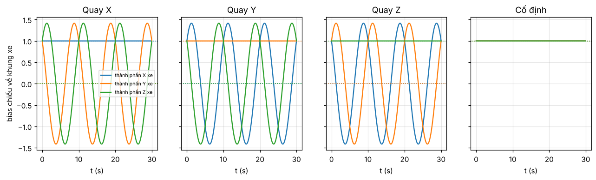
Từ ba mục trên, mỗi kỹ thuật chặn một nhóm nguồn trôi khác nhau. Độ trôi chỉ nhỏ khi mọi nguồn lớn đều bị chặn:
| Nguồn trôi | Quay X/Y | Quay Z | Từ kế | Baro |
|---|---|---|---|---|
| Bias gia tốc ngang → δp ∝ t² | một trục | cả hai | — | — |
| Bias con quay ngang → nghiêng → δp ∝ t³ | một trục | cả hai | một phần (trừ quanh mn) | khi xe cơ động |
| Bias con quay đứng → yaw trôi | có | không | có | — |
| Bias gia tốc đứng + kênh đứng mũ | có (chậm lại) | không | — | có (bị chặn) |
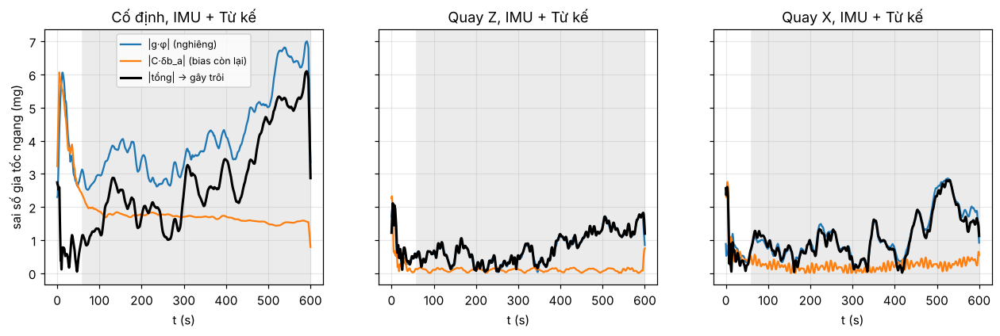
Thống kê tính trong lúc mất GNSS (60–600 s). "Trôi cuối" là sai số ngang tại 600 s. Với baro, sai số ngang có thể dao động lên xuống (Hình 2), nên RMSE và giá trị lớn nhất phản ánh đúng hơn giá trị cuối. Hàng tô màu là tốt nhất trong mỗi cấu hình IMU.
Một lần chạy riêng lẻ có thể khác trung vị nhiều. Ví dụ "Quay X + Baro" kết thúc ở chỉ vài mét dù giữa chừng đã lệch hàng trăm mét. Đó là lý do cần Bảng 1.
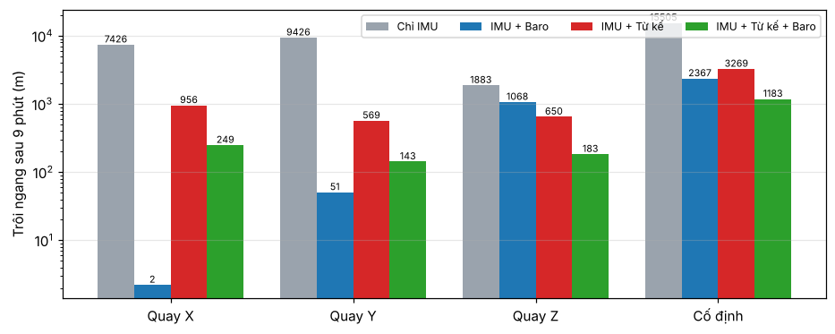
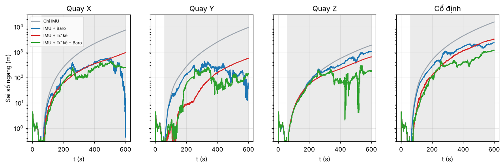
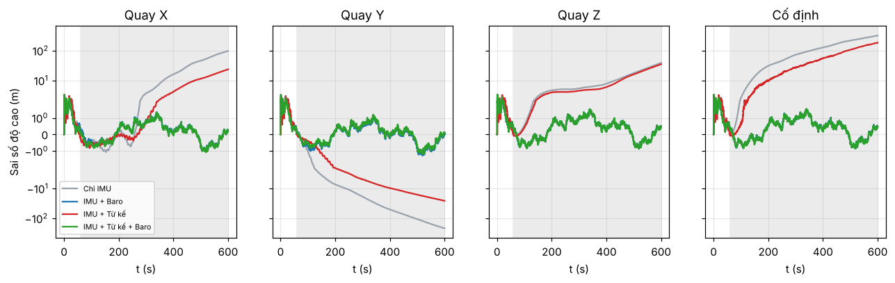
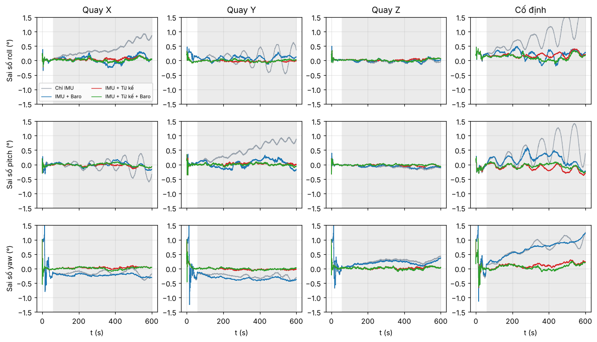
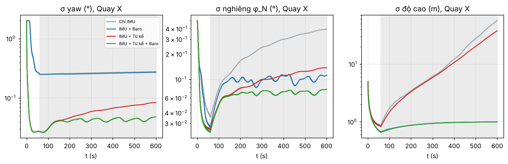
Mỗi bias là một trạng thái của EKF, mô hình Gauss-Markov bậc 1 (IMU, baro) hoặc bước ngẫu nhiên (từ kế). Trong 60 s đầu, GNSS cung cấp δp và δv, bộ lọc khai thác tương quan trong ma trận P để suy ra các bias. Một bias chỉ hội tụ khi nó quan sát được, tức là để lại dấu vết riêng mà không trạng thái nào khác giải thích được.
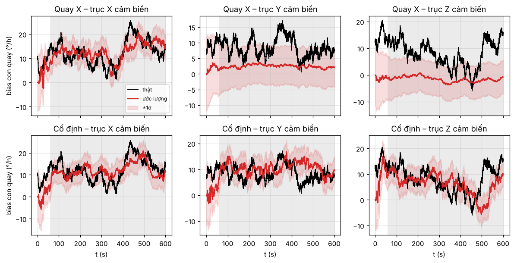
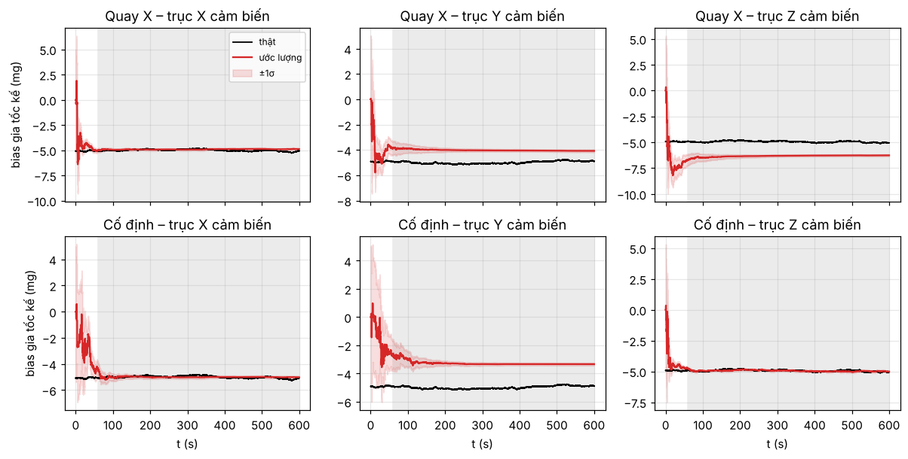
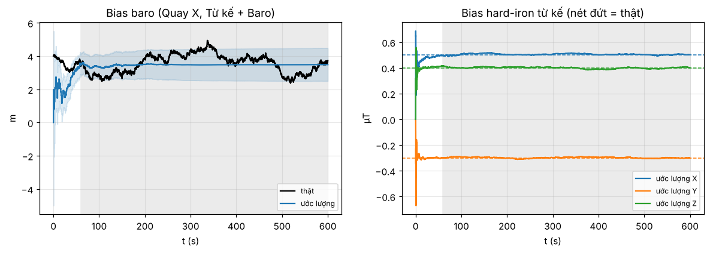
--mode alternate).--imu consumer: phép quay có còn đủ để bù bias lớn không?cd python pip install -e ".[plot,test]" python docs/make_figures.py # Hình 1–11 + docs/results.json (Bảng 2) python docs/monte_carlo.py 12 # docs/montecarlo.json (Bảng 1) python docs/build_doc.py # dựng lại trang này python examples/example_rotating_imu.py --aid both --axes xyz
Mã nguồn: python/pynavego (cơ học INS, mô phỏng IMU/baro/từ kế/encoder/GNSS, EKF 19 trạng thái), học theo NaveGo (Gonzalez et al.). Tài liệu tham khảo: P. D. Groves, Principles of GNSS, Inertial, and Multisensor Integrated Navigation Systems, 2nd ed., 2013; D. Titterton & J. Weston, Strapdown Inertial Navigation Technology, 2004.